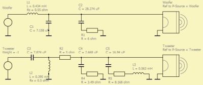
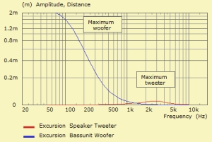
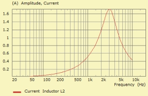
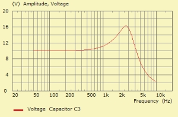
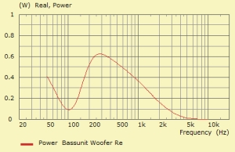
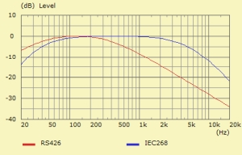

Form - Network Extrema and Integrals
| Home | Observation |
 |
 |
This observation calculates maximum values and integrals of certain component-parameters of the lumped element network.
Create a new LE (extrema & integrals) observation with the help of the
New Component Form at page Observation.
Alternatively, select the schematic editor and issue Add Extrema from popup-menu.
For editing double-click its entry on page Observation or
issue menu Edit/Parameters.
Note, there can be only a single observation-component of this kind.
The result of the calculation is rendered by the table which is also used as input-medium.
The frequency range is specified at menu Global/Frequencies.
The results can be scaled by the Global/Level of Driving.
Note, for quick access you can double-click the legends. Shift+click of an table item yields mutual expanding.
Page - General
Name and Annotation
Provide the name of the component in form of a string. There is also space for annotations.
Page - Output
Analysis
Check which analysis shall take part in the processing.
Network, Cmp-Type and Cmp-Name report properties of the component. which are the network hosting the component, its type and its name.
Values
The results of Extrema calculations are the maximum amplitude-values within the given frequency range as specified at Global Frequencies.
The Integral calculations are taken over the frequency band of the real-part of the power-response of the resistive part of the component.
Frequency
For extrema calculations the column Frequency reports at which frequency the maximum has been found.
Noise Type
For the integration of the power spectrum the response can be weighted by a power density function.
Extrema
 |
 |
 |
 |
 |
The processor performs a search for maxima of certain parameters, selected from the engineering point of view. Taken into account are always all components which feature these particular parameters.
Max Excursion finds the maximum amplitude of the excursion-response of
the loudspeaker or membrane. The amplitude of excursion is measured from rest-position
to peak displacement, for example, at the driving point of the membrane.
The excursion is the dominant cause for distortion of a transducer.
A detailed and in-depth discussion you can find for example at
https://www.klippel.de/know-how/literature/papers.html.
For example for the woofer in the above circuit the maximum of excursion is
2.153mm at low frequencies. The curve is displayed by the blue trace.
The red curve shows the amplitude of excursion of the tweeter. Here the maximum
is 0.026mm at f=2861Hz. The input voltage is set to 10V (peak).
Max Current finds the maximum of amplitude of the current through an inductor. The current can be a "trouble maker" in coils, especially if there is a core with permeability. In audio we assume small signal-amplitude which yields a linear relation between current and voltage: v(t) = di/dt·L. This relation can be transformed into the frequency domain: V/I = jω·L. However, if the inductance depends on the level of current then we have a non-linear relation: v(t) = L(i)·di/dt which causes distortion. The table provides an overview of all components which feature an inductance, such as Coil, LCR or Transformer.
Max Voltage finds the maximum of amplitude of the voltage drop at a capacitor. The electric field inside a capacitor should not be too high otherwise sparks could damage the component. It is interesting to note that the voltage at the component can be higher than the driving voltage. For example at C3 of the above circuit the maximum voltage is 16.18V at f = 2.713kHz for a driving value of 10V. To the right is shown its curve. The increase is generated by resonance poles inside the network.
Max Power finds the point of maximum power in a resistor or resistive part of a component. Also the voice coil resistance Re is taken into account. The value is the real part of the power response with respect to sinoidal driving. For example, the power curve of the voice-coil-resistance Re of the woofer has a maximum of 6.268W at f = 282Hz.
Integrals
Power Density is the result of a broad-band analysis. With the help of it we get an estimation about the heat a resistor would produce if driven by a signal which has a similar power distribution as specified by the Noise Power Density function.
We would like to have a single value which tells us how much power
the device transforms into heat. In the lumped element network such a device
is a resistor, a voice-coil-resistance or any other component with a resistive part.
The simulator gives us the power spectrum. Its real part is output in unit Watts.
The equivalent experiment would be a setup where we have a sine-generator at the input
and a power meter at the component.
However, such a sine-test would be perfect for a siren. The signal, which a music-loudspeaker
transmits, would not be stationary, it typically resembles noise.
With a random type signal a resistor sees more time without a signal
during which it can cool down. Hence, we can assume a higher capacity of power-handling.
White Noise means that there is no weighing. We assume a constant driving voltage for all frequencies as specified. The result can be regarded as a power density or a mean-value of the real-part of the power response. We integrate from f1 to f2 and divide by bandwidth:
D = 1/(f2 - f1)·∫P(f)df
Pink Noise weights the input signal by a filter with an amplitude which is proportional to 1/f. This is equivalent to the spectrum of Pink Noise. One would use this estimation with the argument that a typical speech or music signal would provide more energy at low frequencies than at high frequencies. Pink Noise distributes power evenly on a logarithmic grid.
D = 1/(f2 - f1)·∫(f1/f)2·P(f)df
IEC 268 [41] weights the input signal by the spectrum of Pink Noise (1/f) and additionally by a curve which is shelved at low and high frequencies. The shelving curve is shown in the graph to the right. The argumentation is the same as at the Pink Noise case.
D = 1/(f2 - f1)·∫(f1/f)2·wiec2·P(f)df
RS 426 [42] weights the input signal only by a shelving curve as shown in the graph on the right.
D = 1/(f2 - f1)·∫wrs2·P(f)df with wrs = 1.13·350·f/sqrt((452 + f2)·(3502 + f2))
For comparison the table below compares the Power Density of the voice coil resistance of the woofer of above example:
| White | Pink | IEC286 | RS426 |
| 0.894 | 0.015 | 0.012 | 0.232 |
with frequency range 50 Hz ... 10 kHz and Vin = 10V (peak).
The unit of values are Watt/Hz.
White Noise and RS426 report a higher value of power density than the other
weights. This is so because white noise provides constant power on a linear frequency
grid. Pink and IEC286 on the other hand are driven both by pink noise
which provides constant power measured on a logarithmic grid.